Parking in Israel's cities can be challenging, especially if you're unfamiliar with the color-coded curb system and traffic signs. From Tel Aviv to Jerusalem, from Haifa to Be'er Sheva, understanding Israel's parking rules is essential to avoid fines, towing, and the stress of finding a legal spot.
This guide breaks down Israel's curb markings and parking signs so you can park confidently in any city. Whether you're navigating Tel Aviv's busy streets or parking in Jerusalem's older neighborhoods, you'll find the answers you need right here.
Curb Markings: The Color-Coded System
Israel's parking system relies heavily on curb colors to communicate parking rules. Each color has a specific meaning, and understanding them is the first step to parking legally.
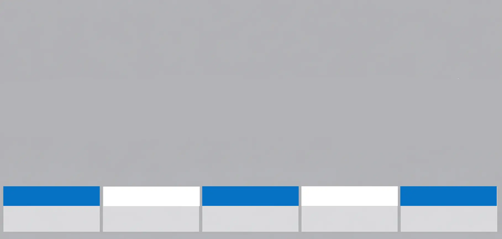
Blue and White Curb
Parking is allowed for a fee. Display a valid parking ticket or mobile payment confirmation. Check nearby signs for rates and time limits.

Black and White Curb
No parking or stopping at any time. This absolute restriction applies 24/7 regardless of the time or day. Violating results in fines and possible towing.
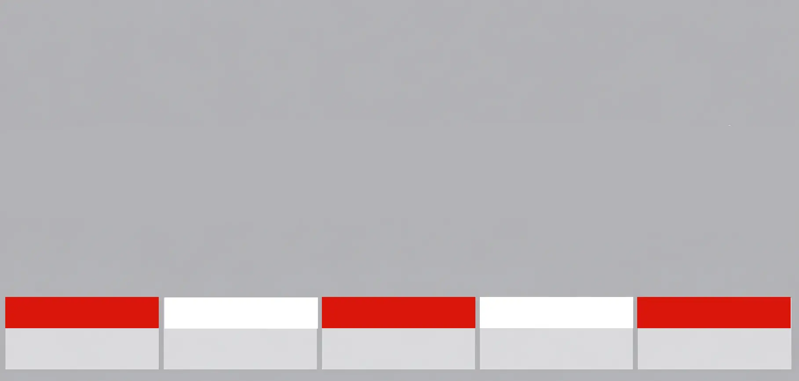
Red and White Curb
Absolute prohibition on stopping or parking. Even brief stops are not permitted. These areas are typically near critical traffic zones, intersections, or bus stops.

Grey Curb
Unrestricted parking if there is no parking sign posted. Always check for nearby signs, as restrictions may apply based on time, day, or special events.
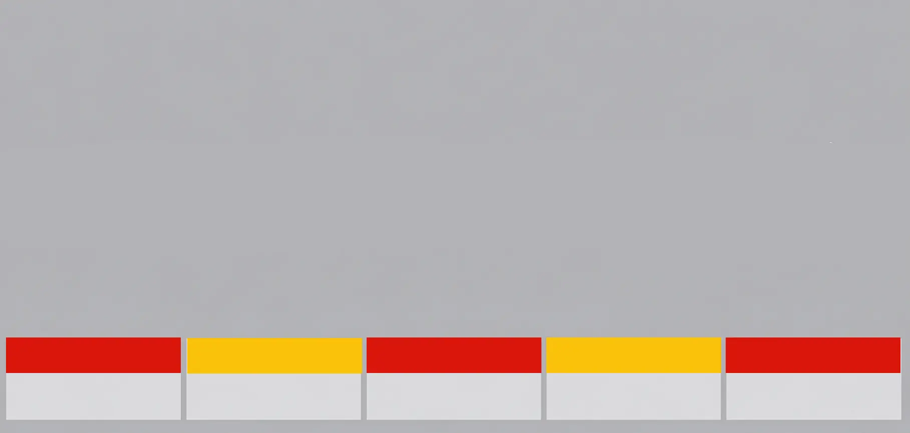
Red and Yellow Curb
Public transportation zone. Parking and stopping are prohibited to keep transit routes clear. These areas are strictly reserved for buses and official vehicles.
Parking Prohibition Signs
Beyond curb markings, Israel uses specific traffic signs to communicate parking restrictions. These signs often work alongside curb colors to clarify rules in specific zones.
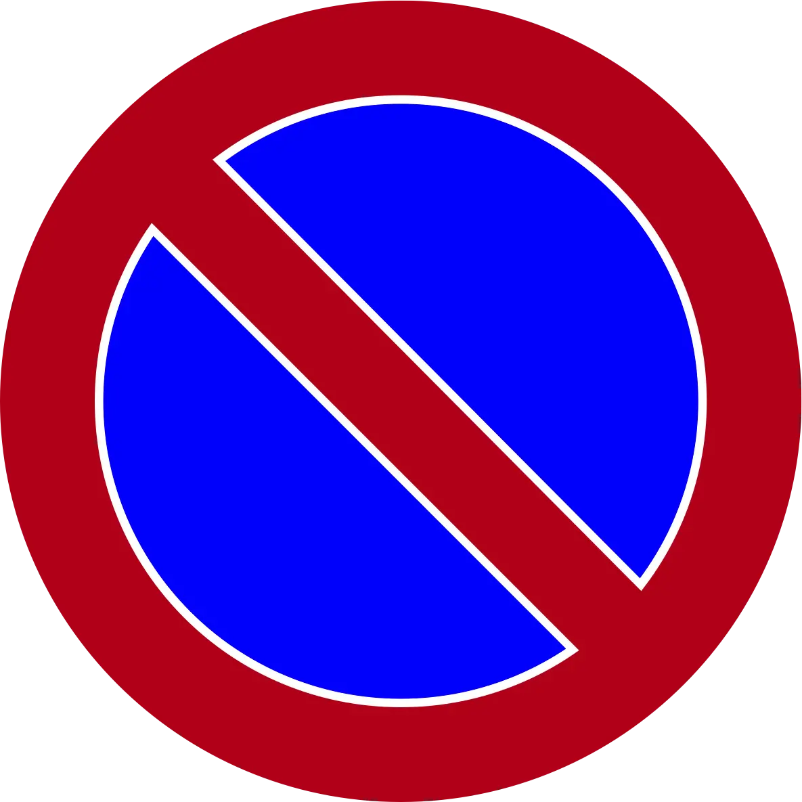
Parking Prohibited
This sign explicitly prohibits parking in the marked area. The prohibition applies according to the time period shown on the sign. No vehicles may park in the designated zone.
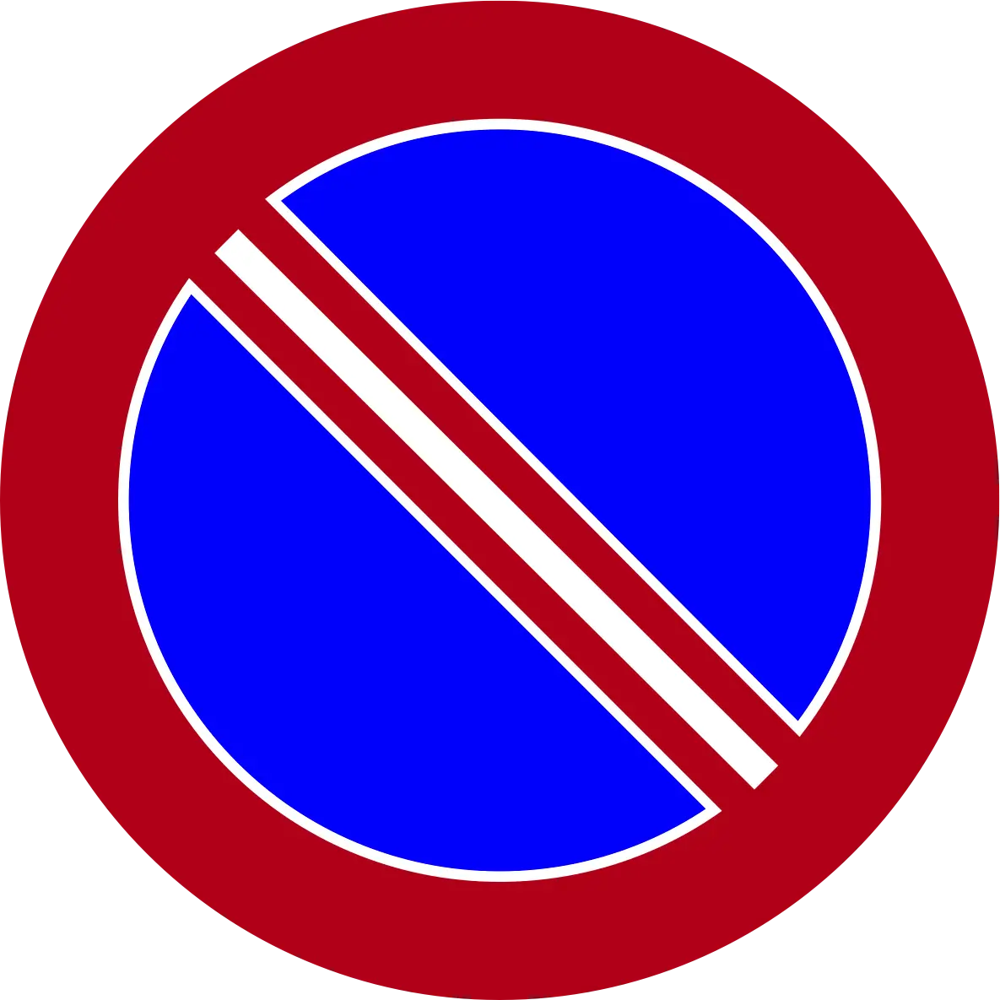
Parking and Stopping Prohibited
Both parking and stopping are absolutely prohibited. You cannot even briefly stop to drop off passengers or make a quick delivery. These areas are critical for traffic flow.
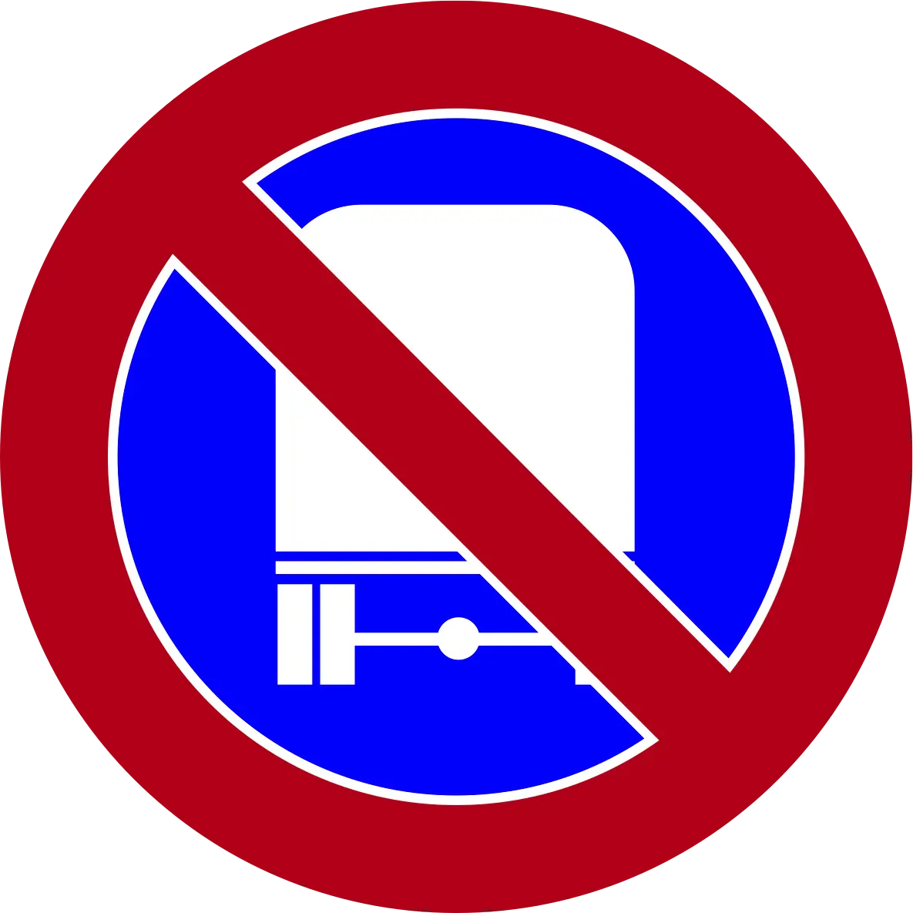
Parking for Trucks Over 10,000 kg Prohibited
Heavy vehicles exceeding 10,000 kg gross weight cannot park in this area. This restriction protects road infrastructure and keeps traffic arteries clear for regular vehicles.
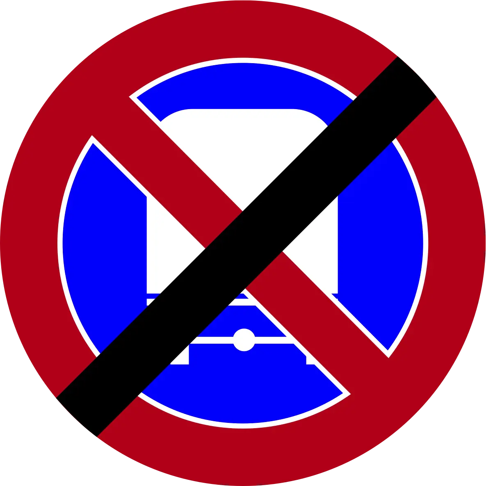
End Parking for Trucks Over 10,000 kg Prohibited
Marks the end of the truck weight restriction. Heavy vehicles may resume parking in areas beyond this sign if other signs permit.
Parking Permission & Zone Designation Signs
These signs indicate where parking is permitted or mark specific parking zones with unique rules or designations.
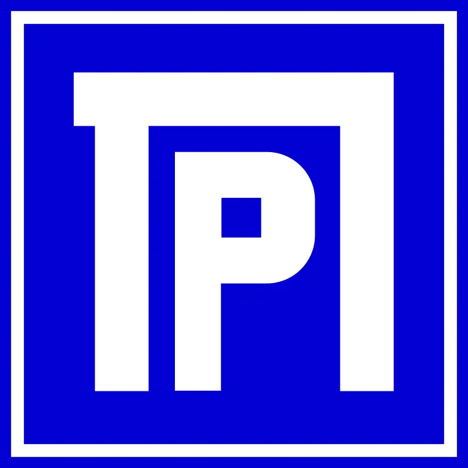
Parking Zone
Marks the beginning of a designated parking zone. The rules for this zone are shown on accompanying signs. Parking is permitted according to the displayed restrictions and time limits.
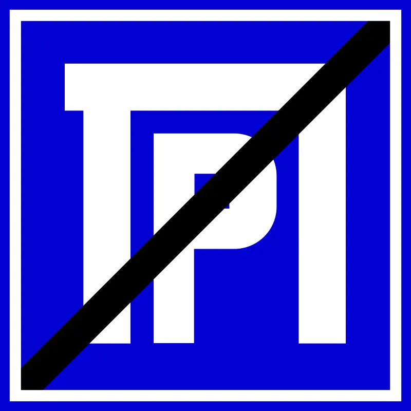
End of Parking Zone
Marks the end of a designated parking zone. Standard parking rules resume beyond this sign unless other signs indicate different restrictions.
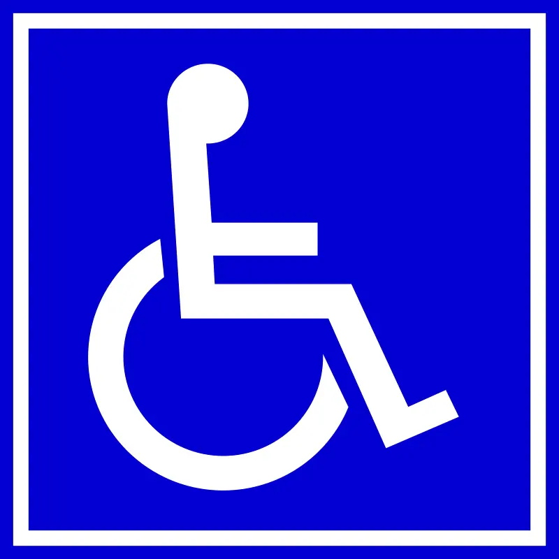
Handicapped Parking
Reserved for vehicles with valid disability permits. Only authorized vehicles displaying the proper permit may park in these spaces. Unauthorized parking results in substantial fines.
Time-Based Restrictions & Street Cleaning
Many parking restrictions in Israel vary by time of day or day of week. Street cleaning schedules in particular require attention, as violating these can result in your car being towed. Always look for signs indicating when parking is prohibited—these typically show times like "No parking 8am-10am Thursdays" for street cleaning cycles.
In residential neighborhoods, you'll often see blue or grey curbs with time restrictions. For example, a blue curb might allow parking Monday-Friday from 6pm to 9am, but no parking during business hours. Respect these windows to avoid fines and towing.
Parking Permits & Resident Zones
Many Israeli cities use permit zones, particularly in city centers and residential neighborhoods. Permit holders (usually residents) get priority parking; non-residents cannot park in restricted permit zones without authorization. If you're staying in a residential area, ask your host or accommodation provider about obtaining a temporary visitor permit. These are typically available from municipality offices or online.
Jerusalem, Tel Aviv, and Haifa all have extensive permit zones. Ignoring a permit restriction in these zones can result in immediate towing, so always confirm parking eligibility before leaving your vehicle.
Payment Methods & Parking Meters
Israel's parking payment systems have modernized significantly. While traditional parking meters still exist, most cities now accept mobile payment apps (like ParkWhiz, which covers many Israeli cities) and credit cards at meter stations. Look for signs indicating which payment methods are accepted in each zone.
Blue curbs typically require payment, but rates vary by location and time. Downtown Jerusalem and Tel Aviv central areas charge premium rates, while residential neighborhoods are generally cheaper or free outside business hours. Always check the meter or sign for rates and time limits before parking.
Special Restrictions & Vehicle Size Regulations
Israel's parking system includes special restrictions and size regulations that apply to specific vehicle types and situations.
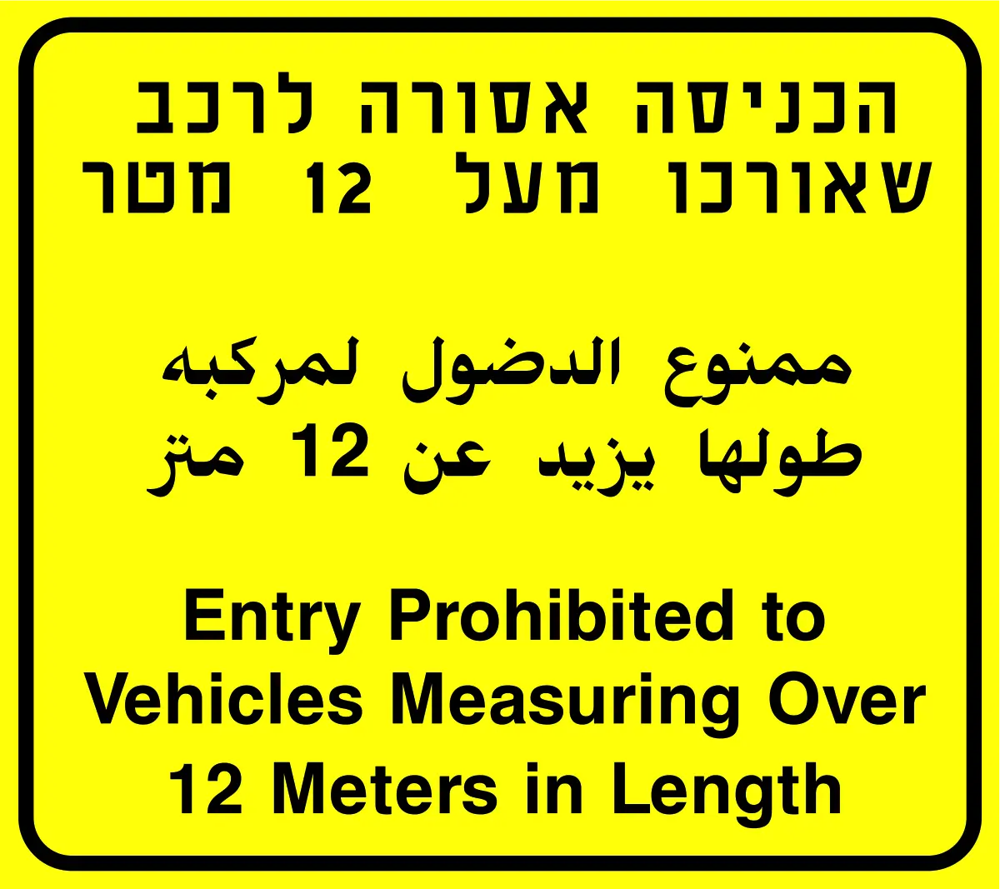
Binding Message
This sign provides binding additional instructions related to the sign above. The message clarifies or modifies the restriction on the main sign above it. Always read both signs together.
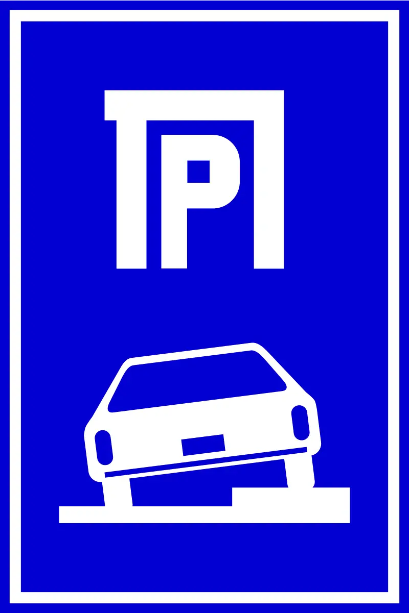
Parking on Sidewalk (Vehicles Up to 2,200 kg)
Permits parking on the sidewalk only for vehicles weighing up to 2,200 kg. Heavier vehicles cannot use sidewalk parking even if the sign is present. Ensure the sidewalk is wide enough and pedestrians aren't obstructed.
Parking by City: Key Differences
Tel Aviv: The most car-dependent Israeli city, Tel Aviv has extensive paid parking zones and strict enforcement. Most central parking requires payment via app or meter. Street parking in residential neighborhoods is often resident-permit only. Parking violations incur substantial fines here more frequently than other cities.
Jerusalem: Jerusalem's hilly terrain and narrow streets make parking challenging. The Old City is largely vehicle-restricted; use municipal lots instead. Modern neighborhoods have blue curbs with time restrictions. Sunday street cleaning is strictly enforced. Parking is generally more available than Tel Aviv, but enforcement of restrictions is equally strict.
Haifa: Haifa is somewhat more relaxed than Tel Aviv and Jerusalem for on-street parking. Grey curbs are common, offering free parking when no signs restrict it. However, commercial areas and neighborhoods near the university enforce permit zones aggressively.
Be'er Sheva & Southern Cities: Smaller cities like Be'er Sheva and Beersheba offer more free parking options, particularly on grey curbs. Paid parking is less common, but street cleaning restrictions are equally enforced. Always check signs carefully even if parking appears abundant.
Towing & Vehicle Recovery
If your vehicle is towed in Israel, recovery is expensive and time-consuming. Towing typically occurs due to: parking in absolute no-parking zones (red/white or black/white curbs), violating street-cleaning restrictions, exceeding time limits in temporary zones, or missing permit requirements.
Towed vehicles are usually held at municipal impounds or private tow yards. Contact local police or the municipality immediately to locate your vehicle. Recovery fees typically range from moderate to substantial depending on towing distance and parking duration. Prevention is far simpler and cheaper than recovery.
Common Parking Violations & Fines
The most frequent violations include: parking on black and white or red and white curbs (results in immediate towing), exceeding time limits on blue curbs (incurs fines), ignoring street-cleaning restrictions (towing risk), and parking in reserved handicapped zones without proper permits (substantial fines).
Fines in Israel are issued on-the-spot or mailed to vehicle owners. Payment should be made promptly to avoid escalation. Always keep receipts and documentation of parking legitimacy, particularly if disputing a ticket.
Get Curb on the App Store
Download Curb and start scanning parking signs today.
The Bottom Line: Know the Rules, Avoid the Fines
Parking in Israel doesn't have to be stressful. The rules are logical once you understand them: blue and white curbs indicate paid parking, black and white curbs mean no parking or stopping, red and white curbs are absolute prohibitions, grey curbs permit parking when no signs restrict it, and red and yellow curbs are reserved for public transportation. Most violations stem from misreading curb colors or ignoring weight restrictions for trucks.
The key is to carefully examine curb colors and read all posted signs before parking. Truck drivers must pay special attention to weight restrictions, and all drivers should respect handicapped parking zones. The few seconds you spend checking could save you substantial fines and the hassle of having your car towed.
And if you want instant clarity on any parking sign or curb color in Israel, download Curb. Whether you're in Tel Aviv, Jerusalem, Haifa, Be'er Sheva, or any Israeli city, Curb's AI analysis gives you the confident answer you need—instantly.
Frequently Asked Questions
A blue and white curb indicates that parking is allowed for a fee. You must display a valid parking ticket or mobile payment confirmation showing you've paid for parking. The exact duration and cost may vary by location, so check nearby signs for specific rates and time limits.
A black and white curb means no parking or stopping is allowed at any time. This absolute restriction applies 24/7, even if parking meters are available nearby. Violating this rule typically results in significant fines and possible towing.
A red and white curb indicates an absolute prohibition on stopping or parking. This is even more restrictive than a black and white curb, as you cannot even briefly stop at the curb. These areas are typically near traffic intersections, bus stops, or other critical traffic areas.
A grey curb indicates unrestricted parking if there is no parking sign posted. However, you should always check for nearby signs, as grey curbs can have restrictions based on time of day, day of week, or special events. When in doubt, look for posted signs to confirm.
Parking fines in Israel vary by violation type, typically ranging from moderate to substantial amounts depending on the severity of the offense. Parking in no-parking zones, exceeding meter time limits, or blocking traffic areas result in fines. Paying promptly may qualify for reduced amounts in some cases.
Get Your Free Parking Rules Cheat Sheet
Download our comprehensive Israel parking guide as a PDF. Keep it on your phone for quick reference whenever you need it.
Download the Free PDF